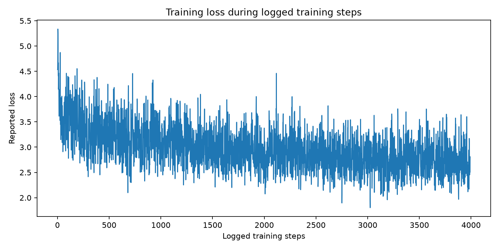
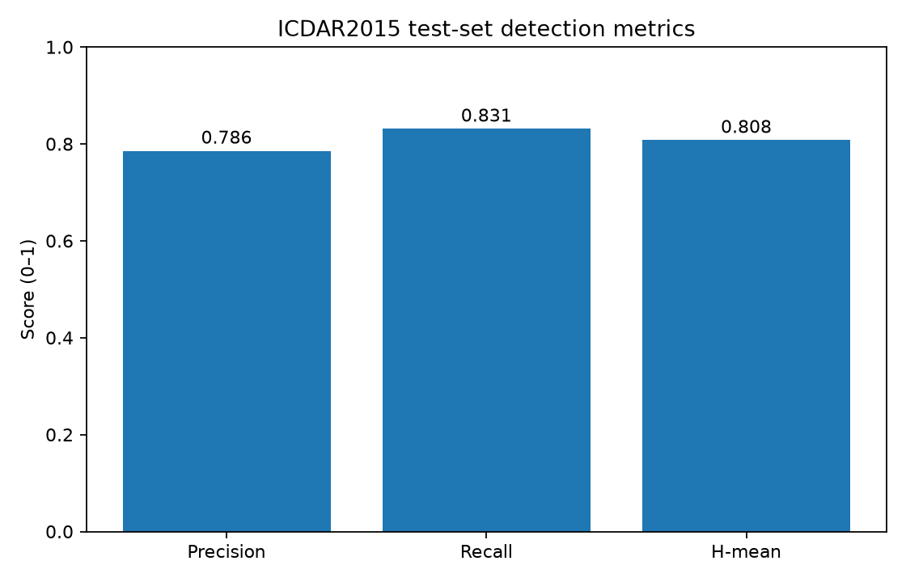
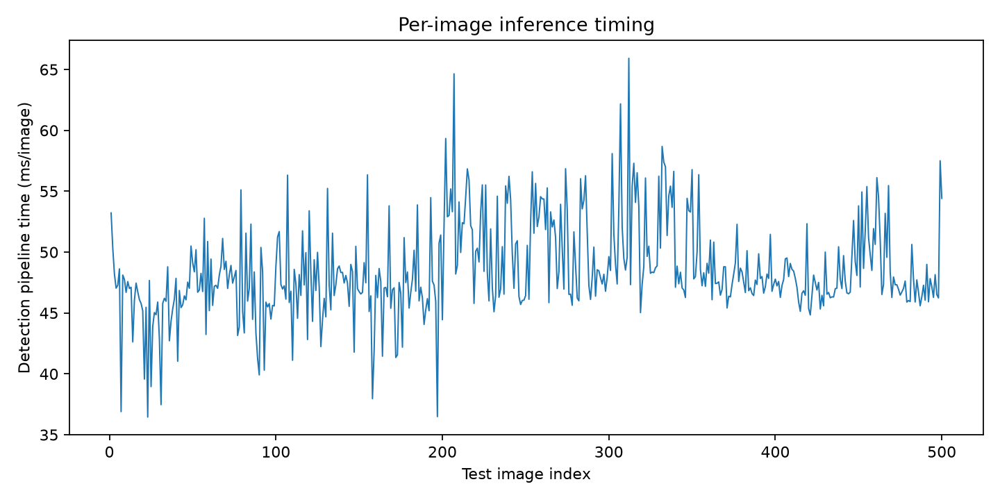

PP-OCRv6-Medium text detector · 800 train / 200 validation / 500 held-out test images (recorded experiment context)



| Epochs | 100 (completed) |
|---|---|
| Batch size | Not reliably extracted from log/config |
| Learning rate | 0.000000 |
| Optimiser | Not extracted; inspect YAML config |
| Loss function | DB text-detection losses (shrink, threshold, binary maps; auxiliary maps) |
| Train loss | 2.506432 (last logged batch; not epoch-average) |
| Validation loss | Not available: validation loss was not confirmed in the supplied summary |
| Accuracy % | Not applicable as a single standard detector metric; report precision/recall/H-mean |
| Precision (test) | 0.785558 (78.56%) |
| Recall (test) | 0.831019 (83.10%) |
| macroF1 Score | Not available; do not equate with detection H-mean |
| macro AUC-ROC | Not available from current detection evaluation |
| Exact-string accuracy | Not available: requires VIN recognition labels and predicted strings |
| Character accuracy | Not available: requires recognition outputs and ground-truth text |
| Character Error Rate (CER) | Not available: requires recognition outputs and ground-truth text |
| Word/String Error Rate | Not available: requires recognition outputs and ground-truth text |
| Detection precision/recall | Precision 0.785558; Recall 0.831019; H-mean 0.807649 |
| Inference time | 48.561 ms/image; throughput 20.593 images/s; n=500 |
| Failure-case categories | Not automatically available: needs annotated review of missed/incorrect detections (e.g. blur, glare, low contrast, rotation, occlusion, small text) |
| Training start | 23 Oct 2026 18:19:29 |
| Training final save | 24 Oct 2026 01:12:47 |
| Training elapsed period | 6 h 53 min 18 sec |
| Best validation epoch | 2 |